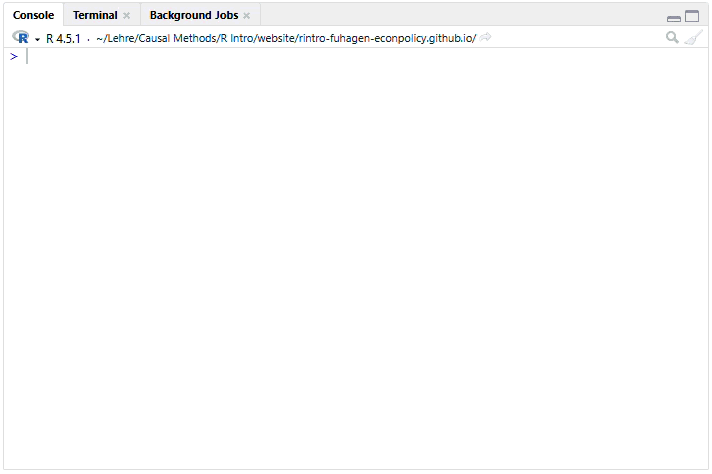
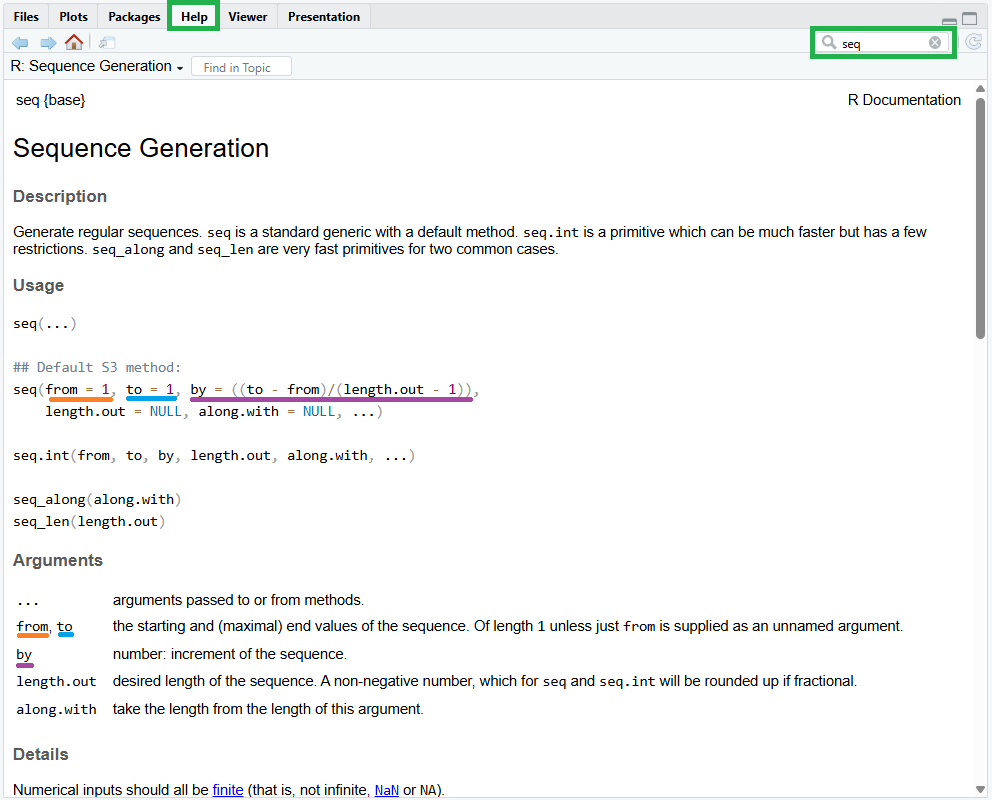

1 Erste Schritte in R
1.1 Installation
Für die Teilnahme an diesem Kurs müssen zwei Programme auf dem Computer installiert sein: R und RStudio. R stellt die eigentliche Programmiersprache bereit, während RStudio als integrierte Entwicklungsumgebung (IDE) dient. Zwar lässt sich R auch ohne RStudio nutzen, die Arbeit in RStudio ist jedoch deutlich komfortabler und übersichtlicher.
Sollte man bereits Erfahrung mit dem Programmieren haben und regelmäßig mit verschiedenen Sprachen arbeiten, könnten alternativ auch andere IDEs interessant sein, die den Wechsel zwischen Sprachen erleichtern. Beispiele hierfür sind Visual Studio Code oder Positron.
1.1.1 R installieren
- Rufe die Website https://cran.r-project.org/ auf
- Wähle dein Betriebssystem (Windows, Mac, Linux)
- Lade die neueste Version herunter
- Starte die Installation und folge den Anweisungen
R wird regelmäßig weiterentwickelt und erhält häufig Updates. Daher sollte die installierte Version gelegentlich aktualisiert werden. Insbesondere größere Versionssprünge können etwas aufwendiger sein, da bereits installierte Packages anschließend erneut installiert werden müssen. Detaillierte Hinweise zum Aktualisieren von R stellt der Helpdesk der FernUniversität Hagen hier zur Verfügung.
1.1.2 RStudio installieren
- Rufe die Website https://posit.co/download/rstudio-desktop/ auf
- Lade RStudio Desktop (kostenlose Version) herunter
- Starte die Installation und folge den Anweisungen
Sobald eine neue Version von RStudio verfügbar ist, erscheint beim Start des Programms ein entsprechender Hinweis. Die Aktualisierung kann direkt durchgeführt werden, indem man den angezeigten Schritten folgst.
WarnungWichtig!
Installiere zuerst R und danach RStudio, da RStudio auf eine vorhandene R-Installation angewiesen ist.
1.2 Das RStudio-Interface
Öffnen wir nun RStudio. Das Interface besteht dabei aus den folgenden Elementen (siehe Abbildung 1.1):
- Konsole (A): Hier können wir unseren Code ausführen und der korrespondierende Output wird angezeigt. In diesem Beispiel wurde etwa 1+1 addiert sowie der Vektor
xdefiniert und angezeigt. - Environment (B): Zeigt gespeicherte Objekte. Hier findet sich der in der Konsole definierte Vektor
xwieder. - Files/Plot/Help (C): Hier finden wir unter anderem einen Databrowser (Files), deine erstellten Grafiken (Plots) und die Hilfefunktion (Help)
- Menüleiste (D)
1.3 Erste Befehle
1.3.1 R als Taschenrechner
Lass uns als erstes R als Taschenrechner verwenden, um die Handhabung der Konsole kennenzulernen. Um R als Taschenrechner zu nutzen, geben wir einfach die gewünschte Operation ein und drückst Enter, um den Code auszuführen. Der Befehl (auch Prompt genannt) wird in der Konsole angeführt. Das Ergebnis der Operation wird in der nächsten Zeile angeführt. Beispielsweise kann man in R Zahlen addieren, potenzieren oder logarithmieren:
10 + 4
#> [1] 14
2^3
#> [1] 8
log(4)
#> [1] 1.386294
HinweisHinweis
Um ganze Codeblöcke in diesem Kurs kopieren zu können, wird der Output in den Blöcken auskommentiert und folgt einem #>. In der eigenen Konsole wird der Output ohne #> angezeigt. Die Addition sieht in der Konsole nach der Befehlausführung etwa so aus:
> 10 + 4
[1] 141.3.2 Kommentare
Um später nachvollziehen zu können, was in unserem Code passiert, können wir Kommentare in deinem Code hinterlassen. Kommentare beginnen mit # und werden von R ignoriert:
# Division
10 / 5 # Kommentare können auch am Ende einer Zeile stehen
#> [1] 21.3.3 Funktionen verwenden
Für komplexere Operationen bietet R eine große Sammlung an Funktionen. Die Ausführung einer Funktion folgt immer dem folgenden Aufbau:
function_name(argument1 = value1, argument2 = value2, ...)Weiter oben haben wir bereits unsere erste Funktion ausgeführt, um den natürlichen Logarithmus von 4 zu berechen (log(4)). Um das Ausführen von Funktionen besser kennen zu lernen, sehen wir uns die Funktion seq() an, mit welcher wir Sequenzen von Zahlen erstellen können. Um die Funktion aufzurufen, tippen wir seq in die Konsole ein. Ab dem dritten Buchstaben öffnet sich in R ein Pop-Up-Fenster mit möglichen Optionen. Hier kann man entweder mit den Pfeiltasten rauf- oder runtergehen, die gewünschte Funktion wählen und Enter drücken.

Wir können auch den gesamten Befehl selbst eingeben und die Klammer öffnen: seq().
Um mehr über die Funktion zu erfahren, können wir einen der folgenden Befehle ausführen:
?seq
help(seq)Alternativ drücken wir F1 während wir seq() im Pop-Up Menü ausgewählt haben, oder wir gehen gehen direkt zum Help-Fenster und geben seq in die Suchfunktion ein. Im Help-Fenster (Panel C in Abbildung 1.1) erhalten wir dann eine ausführliche Erklärung der Funktion.
Die R-Dokumentation gibt Aufschluss über die wesentlichen Argumente dieser Funktion. Wir erfahren, dass wir mit from = ... den Startwert und mit to = ... den Endwert der Zahlsequenz spezifizieren. Über das Argument by = ... definieren wir wiederum die Inkremente der Sequenz. Auch können wir die Default-Einstellungen der Funktion ableiten: Diese ist für from, to und by gleich 1.

Um eine Sequenz von 1 bis 10 in Einserschritten zu erstellen, führen wir den folgenden Befehl aus:
seq(from = 1, to = 10)
#> [1] 1 2 3 4 5 6 7 8 9 10Da wir Einserschritte wollen und die Default-Option for by = ... gleich 1 ist, brauchen wir dieses Argument nicht spezifizieren. Ist uns eine Funktion gut bekannt, können wir auch die Bezeichnungen der jeweiligen Argumente ignorieren. R interpretiert den Befehl dann so, als würde jeder Wert für das in dieser Reihenfolge vorgesehene Argument stehen. Um etwa eine Sequenz von 1 bis 10 in Zweierschritten zu erstellen, können wir also auch schreiben:
seq(1, 10, 2)
#> [1] 1 3 5 7 91.4 Objekte
1.4.1 Objekte erstellen
Um Daten zu speichern, zu organisieren und wiederzuverwenden können diese in R als Objekt gespeichert werden. In R speichern wir Werte in Objekten mit dem Zuweisungsoperator <-. Die Zuweisungslogik folgt dabei immer der Form objekt_name <- element:
number <- 3Mit c() können wir mehrere Elemente zu einem Objekt hinzufügen, wobei die einzelne Elemente mit einem Komma getrennt werden:
numbers <- c(1, 2, 3, 4, 5)Die beiden Objekte werden nun im Environment (Panel B in Abbildung 1.1) angeführt. Beim definieren eines Objekts wird dieses nicht automatisch in der Konsole angezeigt. Um uns das Objekt zahlen anzusehen, können wir einfach den Objektnamen in der Konsole eingeben und den Befehl ausführen:
numbers
#> [1] 1 2 3 4 5
TippObjektnamen
Objektnamen müssen mit einem Buchstaben beginnen. Erlaubte Zeichen sind Buchstaben, Ziffern, Unterstriche (_) und Punkte (.). Vermeide Umlaute und andere Sonderzeichen. Objekte sollten aussagekräftig sein und einer gleichbleibenden Namensgebungslogik folgen. Eine weitverbreitete Namensgebungslogik ist snake_case, wobei einzelne Worte in Kleinbuchstaben mit Unterstrichen getrennt werden, z.b. age_students oder income_students. Damit Objektnamen nicht allzu lang werden, verwenden wir Abkürzungen, die auch später nachvollziehbar bleiben, etwa age_std oder inc_std.
Objekte können überschrieben werden, in dem ein oder mehrere Elemente demselben Objektnamen überwiesen werden:
numbers <- c(6.5, 7, 8.3, 9, 10)
WarnungFehler bei Objektadressierung
Um Objekte zu addressieren, muss dieses ohne Fehler aufgerufen werden. Tippfehler oder unvollständige Objektnamen führen zu Error-Meldungen. R ist dabei case-sensitiv:
numers
#> Fehler: Objekt 'numers' nicht gefunden
Numbers
#> Fehler: Objekt 'Numbers' nicht gefunden1.4.2 Datentypen
In R gibt es verschiedene grundlegende Datentypen, die sogenannten atomic types, die die Bausteine für alle anderen Objekte bilden. Der Typ numeric wird für Zahlen verwendet. Unsere oben definierten Objekte number und numbers haben diesen Typ. Ein Sonderfall ist hierbei der Typ integer, welcher nur Zahlen aus dem Set der ganzen Zahlen (also keine Dezimalstellen) speichert. Möchten wir explizit Zahlen explizit als integer Objekt abspeichern, muss entweder ein L an jede Zahl angehängt werden oder die Funktion as.integer() verwendet werden:
numbers_int <- c(2L, 3L)
numbers_int <- as.integer(c(2, 3)) # identer Befehl
numbers_int
#> [1] 2 3In den allermeisten Fällen ist eine Definition als integer Typ nicht notwendig und somit der Typ numeric präferierbar.
Der Typ logical speichert Wahrheitswerte, also TRUE oder FALSE, und wird häufig für Bedingungen, Filter oder logische Vergleiche eingesetzt. Wenn wir zum Beispiel prüfen wollen, ob die jeweiligen Elemente in numbers größer als 7 sind, entsteht ein logical-Objekt:
numbers_greater7 <- numbers > 7
numbers_greater7
#> [1] FALSE FALSE TRUE TRUE TRUECharacter-Objekte enthalten Text:
names <- c("Anna", "Ben", "Clara")
names
#> [1] "Anna" "Ben" "Clara"Um R mitzuteilen, dass es sich um Text handelt, verwenden wir Anfühungszeichen, da sonst nach einem Objekt mit diesem Namen gesucht wird:
names <- c(Anna, Ben, Clara)
#> Fehler: Objekt 'Anna' nicht gefundenWeitere häufig verwendete Datentypen in R sind der factor-Typ für kategoriale Variablen oder der date-Typ für Datum- und Zeitangaben.
Um zu sehen, welchen Typ ein bestimmtes Objekt hat, verwenden wir class():
class(numbers)
#> [1] "numeric"
class(numbers_int)
#> [1] "integer"
class(numbers_greater7)
#> [1] "logical"
class(names)
#> [1] "character"1.4.3 Objekttypen
Elemente mit einem bestimmten Datentyp bilden die Bausteine für komplexere Objekte. Diese lassen sich je nach Inhalt wieder in unterschiedliche Typen unterteilen. Tabelle 1.1 gibt eine Übersicht über die wichtigsten Objekttypen in R.
| Objekttyp | Beschreibung | Datentyp-Regel |
|---|---|---|
| Vektor | Eindimensionale Sammlung von Elementen | Alle Elemente gleicher Datentyp |
| Matrix | Zweidimensionale Datenstruktur (Zeilen × Spalten) | Alle Elemente gleicher Datentyp |
| Dataframe | Tabellenartige Struktur mit Spalten | Spalten können unterschiedliche Datentypen haben |
| Tibble | Moderne Variante des Dataframes (tidyverse) | Wie Dataframe, aber keine automatische Typumwandlung |
| Liste | Flexible Sammlung von Objekten | Beliebige Datentypen kombinierbar |
Den Objekttyp Vektor haben wir bereits kennengelernt. Ein Vektor ist eine eindimensionale Sammlung an Elementen desselben Datentyps. Das Objekt numbers ist etwa ein Vektor bestehend aus numerischen Elementen.
Eine Matrix ist wiederum ein zweidimensionales Objekt aus Elementen desselben Datentyps:
two_by_two <- matrix(data = c(1, 2, 3, 4),
nrow = 2, ncol = 2)
two_by_two
#> [,1] [,2]
#> [1,] 1 3
#> [2,] 2 4
three_by_two <- matrix(data = c(1, 2, 3, 4, 5, 6),
nrow = 3, ncol = 2)
three_by_two
#> [,1] [,2]
#> [1,] 1 4
#> [2,] 2 5
#> [3,] 3 6Die Beschränkung auf den gleichen Datentyp bei Matrizen ist häufig zu restriktiv für einen mehrdimensionalen Datensatz. Datensätze werden daher in R meistens als Dataframe gespeichert. Ein Dataframe ist ebenfalls zweidimensional, erlaubt aber, dass die jeweiligen Spalten einen unterschiedlichen Datentyp haben. So können wir uns beispielsweise einen Datensatz mit der Funktion data.frame() erstellen, der als Variablen in seinen Spalten Namen als character, Alter als integer, und Noten als numeric abspeichert:
students <- data.frame(
name = c("Anna", "Ben", "Clara"),
age = c(22L, 25, 23L),
grade = c(1.7, 2.3, 4.0)
)
students
#> name age grade
#> 1 Anna 22 1.7
#> 2 Ben 25 2.3
#> 3 Clara 23 4.0Dataframes eignen sich daher gut für Datenanalysen. Eine modernere (aber in den meisten Eigenschaften idente) Version des Dataframes ist ein Tibble.
Eine Liste ist die flexibelste Struktur und kann verschiedene Objekte, also Vektoren, Matrizen, Dataframes oder sogar andere Listen, zusammenfassen. Wir können damit zum Beispiel sowohl den Vektor numbers, die Matrix three_by_two und den Dataframe students in einem Objekt abspeichern:
list_all <- list(
numbers,
three_by_two,
students
)
list_all
#> [[1]]
#> [1] 6.5 7.0 8.3 9.0 10.0
#>
#> [[2]]
#> [,1] [,2]
#> [1,] 1 4
#> [2,] 2 5
#> [3,] 3 6
#>
#> [[3]]
#> name age grade
#> 1 Anna 22 1.7
#> 2 Ben 25 2.3
#> 3 Clara 23 4.01.4.4 Indizierung von Objekten
Über Indizierung können wir uns einzelne Elemente von Objekten anzeigen lassen und in weitere Folge auch mit diesen Arbeiten. Die Position eines oder mehrere Elemente wird dabei in eckigen Klammern objekt[] angegeben. Bei Vektoren ist die Indizierung aufgrund der Eindimensionalität des Objekts einfach:
numbers
#> [1] 6.5 7.0 8.3 9.0 10.0
numbers[2] # zweites Element im Vektor numbers
#> [1] 7
numbers[c(1, 4)] # erstes und viertes Element
#> [1] 6.5 9.0
numbers[2:4] # zweites bis viertes Element
#> [1] 7.0 8.3 9.0
numbers[-3] # numbers Vektor ohne drittes Element
#> [1] 6.5 7.0 9.0 10.0Bei zweidimensionalen Objekten (Matrizen und Dataframes) erfolgt die Indizierung nach dem Prinzip objekt[zeile, spalte] angegeben. Wollen wir z.B. nur auf die Spalte indizieren, aber alle Zeilen behalten, lassen wir die erste Index-Option frei (objekt[,spalte]):
three_by_two[2, 2] # Element in Zeile 2, Spalte 2
#> [1] 5
three_by_two[1,] # alle Elemente der ersten Zeile
#> [1] 1 4
three_by_two[c(1,3), 2] # erste und dritte Zeile in der zweiten Spalte
#> [1] 4 6Bei Dataframes können wir auf Spalten auch mit dem $-Operator indizieren: dataframe$varname ist also ident zu dataframe[,spalte]:
students$name
#> [1] "Anna" "Ben" "Clara"
students[,1]
#> [1] "Anna" "Ben" "Clara"
students$age[2]
#> [1] 25
students[2,2]
#> [1] 25In einer Liste abgespeicherte Objekte werden mit liste[[index]] aufgerufen. Das erste Objekt in liste_alles finden wir somit über:
list_all[[1]]
#> [1] 6.5 7.0 8.3 9.0 10.01.4.5 Arbeiten mit Objekten
Wir können Operationen auch mit ganzen Objekte oder indizierten Subsets ausführen:
numbers*2 # Mulipliziert alle Elemente
#> [1] 13.0 14.0 16.6 18.0 20.0
max(numbers) # Maximum im Vektor numbers
#> [1] 10
mean(students$age) # Durchschnittsalter der Studierenden
#> [1] 23.33333
nrow(students) # Anzahl der Zeilen im students dataframe
#> [1] 31.5 Packages
Die bisher verwendeten Funktionen sind allesamt in der Core-Version von R enthalten, welche wir zu Beginn installiert haben. In R werden zusätzliche Funktionen und Datensätze über Packages bereitgestellt, die die Grundfunktionen der Sprache erweitern. Jedes Package bündelt thematisch verwandte Werkzeuge, wie zum Beispiel Statistikfunktionen, Visualisierungen oder Datenmanipulation. Für diesen Kurs werden wir vor allem auf das Package tidyverse zurückgreifen, eine Sammlung von R-Packages, die gemeinsam eine konsistente und leicht verständliche Syntax für Datenaufbereitung und Visualisierung bereitstellen.
Die Installation eines Packages erfolgt über die Funktion install.packages():
install.packages("tidyverse")Die Installation eines Packages ist nur einmal notwendig. Bei jeder Sitzung muss jedoch das gewünschte Package über library() geladen werden, um auf die darin enthaltenen Funktionen zugreifen zu können:
library(tidyverse)
#> ── Attaching core tidyverse packages ───────────────────── tidyverse 2.0.0 ──
#> ✔ dplyr 1.2.0 ✔ readr 2.1.6
#> ✔ forcats 1.0.1 ✔ stringr 1.6.0
#> ✔ ggplot2 4.0.2 ✔ tibble 3.3.1
#> ✔ lubridate 1.9.5 ✔ tidyr 1.3.2
#> ✔ purrr 1.2.1
#> ── Conflicts ─────────────────────────────────────── tidyverse_conflicts() ──
#> ✖ dplyr::filter() masks stats::filter()
#> ✖ dplyr::group_rows() masks kableExtra::group_rows()
#> ✖ dplyr::lag() masks stats::lag()
#> ℹ Use the conflicted package (<http://conflicted.r-lib.org/>) to force all conflicts to become errorsAlternativ können wir auch auf Funktionen aus einem bereits installierten aber nicht geladenen Package zugreifen, in dem wir vor der Funktion auf das Package verweisen:
package_name::fct_name(argument1 = value1, argument2 = value2, ...)